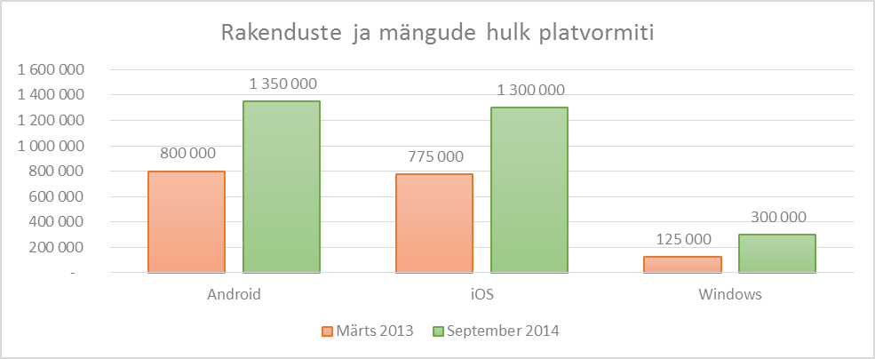

Peamisteks levituskanaliteks mobiili-rakenduste puhul üldjuhtumil on platvormi tootja poed (Apple App Store, Google Play ja Microsoft Windows Store), mis on tänaseks kasvanud ülisuurteks rakenduste ja mängude varamuteks53. Rakenduste hulgast orienteeruvalt 90% jagavad võrdselt omavahel ära Apple ja Google ning järelejäänud ca 10% kuulub Microsoftile. Statistiliselt on rakenduste ja mängude koguste ülevaate toodud järgmisel joonisel (vt joonis 14).

Joonis 14 . Rakenduste ja mängude hulk platvormiti tootjate levituskanalites
Lisaks tootjapõhistele levituskanalitele (eelpoolmainitud Apple App Store/iTunes, Google Play ja Microsoft Windows Store) on turul alternatiivseid levituskanaleid:
Alternatiivsete levituskanalite kasutamisel kaasnevad lõppkasutaja seadmele täiendavad turvariskid (tuleb murda või lubada tootja poolse turvamudeli eiramist). Lisaks puudub alternatiivsete levituskanalite puhul rakenduste automaate uuendamine (AutoUpdate).
Google Play (Android) puhul on tegemist kõige liberaalsema keskkonnaga arendatud rakenduste avaldamiseks. Sisuliselt on kogu vastutus arendusnõuetest kinnipidamiseks antud arendajale ning Google Play on minimaalsete kontrollidega keskkond rakenduste turvaliseks jagamiseks. Avaldamise peamiseks tingimuseks on pahavara kontrollide ja automaattestide edukas läbimine, et veenduda rakenduse töötamises. Antud liberaalsusest tulenevalt reeglina on rakenduse avaldamine keskkonnas väga kiire (reeglina 1-2 tunniga). Teisalt tähendab liberaalsus ka seda, et platvormil olevate rakenduste hulk ja nende kvaliteetsuse tase on väga erinev.
Kvaliteedi tõstmiseks on Google Play toetatud ka beta-testimise võimekusega, ehk on loodud Google Play Beta Testers grupp (grupi suurused ei ole piiratud) ning arendajatel on võimalus seda gruppi kasutada piiratud kasutajatega kontrollitud testimiste läbiviimiseks. Antud grupis avaldatud rakendused ei ole avalikkusele kättesaadavad.
Apple on teadaolevalt kõikidest levituskanalitest kõige karmimate ja jäigemate reeglite ja poliitikatega. iOS (Apple) rakenduste avaldamise protsess koosneb nii automaattestidest ning Apple läbivaatustest (review). Sisuliselt ei avaldata ühtegi rakendust, kui see ei ole läbinud automaatteste ja manuaalseid Apple poolseid kontrolle, et veenduda poliitikate ja reeglite vastavuses.
Puuduste tuvastamisel edastatakse arendajale vastavad kommentaarid ning nende kõrvaldamisel taas käivitub läbivaatuste protsess. Heakskiidu saanud rakendus avaldatakse levituskeskkonnas.
Hinnanguliselt kulub läbivaatusele 3-5 tööpäeva (kogukonna poolt uuendatava info alusel on aga keskmine rakenduse läbivaatuse aeg 8 tööpäeva55). Täiendavalt on võimalik kuni kaks korda aastas kasutada kiirendatud korras läbivaatusi (nn Expedited App Review) – nt kriitilised veaparandused või versiooniuuendused, ajasõltuvused avaldamisel vms. Peaasjalikult sõltub protsessi kestus tootjast ja selle läbimise kiirust üldiselt mõjutada ei ole võimalik.
Rakenduse avaldamise kiiruse üheks mõõdikuks on arendustöö tulemite kvaliteetsus ja nõuetele vastavus (mida Apple võib ühepoolset korrigeerida ja/või muuta). Enne avaldamist tuleb kindlasti veenduda rakenduse vastavust Apple nõuetele ning minimeerida võimalikke vigu ja nende avaldumise riski.
Täiendavalt on võimalik Apple puhul kasutada kuni 1000 liikmega testimisgruppi beta-testimiseks (testimisgrupi loomine toimub ükshaaval meiliaadresside kaudu). Kui grupi suurus jääb vahemikku 101 – 1000 seadet, siis rakendab Apple review protessi. Beta-testimisse lisatud rakendus ei ole avalikkusele kättesaadav.
Windows Phone Store (Windows Mobile) rakenduste avaldamise protsess koosneb nii automaattestidest ning Microsofti sertifitseerimisest. Sisuliselt ei avaldata ühtegi rakendust, kui see ei ole läbinud automaatteste ja manuaalseid Microsofti poolseid kontrolle, et veenduda poliitikate ja reeglite vastavuses.
Puuduste tuvastamisel edastatakse arendajale vastavad kommentaarid ning nende kõrvaldamisel taas-käivitub sertifitseerimise protsess. Heakskiidu saanud rakendus avaldatakse levituskeskkonnas. Keskmiselt kulub sertifitseerimisprotsessi läbimiseks 1-3 tööpäeva. Teadaolevalt sõltub protsessi kestus peamiselt tootjast ja seda ei ole võimalik oluliselt mõjutada (kiirendada), sh puudub Microsoftil võimalus kiirendatud korras sertifitseerimisteks (analoog Apple Expedited App Review).
Rakenduse avaldamise kiiruse üheks mõõdikuks on arendustöö tulemite kvaliteetsus ja nõuetele vastavus (mida Microsoft võib ühepoolset korrigeerida ja/või muuta). Enne avaldamist tuleb kindlasti veenduda rakenduse vastavust Microsoft nõuetele ning minimeerida võimalikke vigu ja nende avaldumise riski.
Täiendavalt on võimalik Microsoftis kasutada kuni 5 seadmega testimisgruppi beta-testimiseks, kus toimivad reeglid ja protsessid on lihtsustatud (nt automaatne sertifitseerimisprotsess, versiooniuuendusi võib teha igal ajal jne). Beta testimisse pandud rakendus ei ole kättesaadav avalikkusele.
[53] Facts on App Stores. Statista [URL]
[54] List of Android App Stores. One Plaform Foundation [URL]
[55] Average App Store Review Times. Shiny Development [URL]